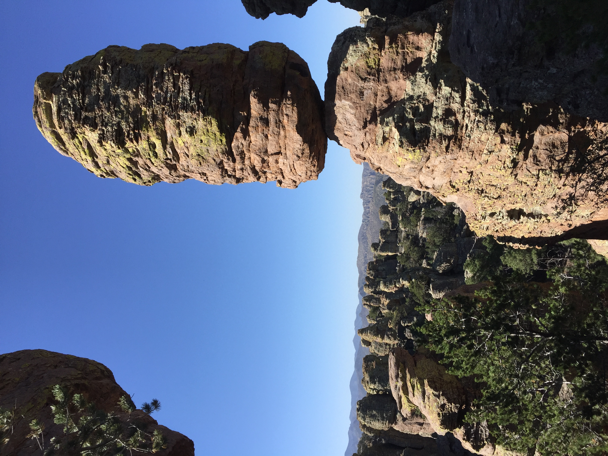

Chiricahua National Monument
The full loop at Chiricahua National Monument feels like wandering through another world. The moment you drop into the heart of the park, the landscape shifts into a maze of towering rock spires, balancing boulders, and formations so strange they almost look sculpted on purpose. It’s easy to see why people call this place a “Wonderland of Rocks”—every turn reveals something new and unexpected. The loop winds through canyons, ridges, and narrow passages where the rocks rise like stone sentinels on both sides. Some formations look like giant chess pieces, others like frozen waves, and some are so delicately balanced you can’t help but stop and stare. The mix of pine, oak, and open sky adds just enough greenery to make the whole scene feel even more surreal. What makes the hike special is how immersive it is. You’re not just viewing the formations from a distance—you’re walking right among them, weaving through clusters of hoodoos and squeezing between walls that have been shaped by centuries of wind and erosion. The trail has a rhythm to it: long stretches of quiet forest, sudden bursts of panoramic views, and then those tight, winding sections where the rocks feel close enough to touch. By the time you finish the loop, you feel like you’ve explored a hidden world tucked away in southeastern Arizona. It’s challenging in places, but the scenery is so unique and otherworldly that the miles seem to fly by. Chiricahua is one of those hikes that sticks with you long after you’ve left the rocks behind.